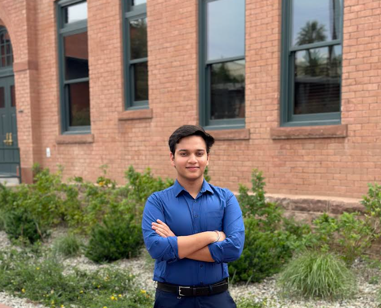
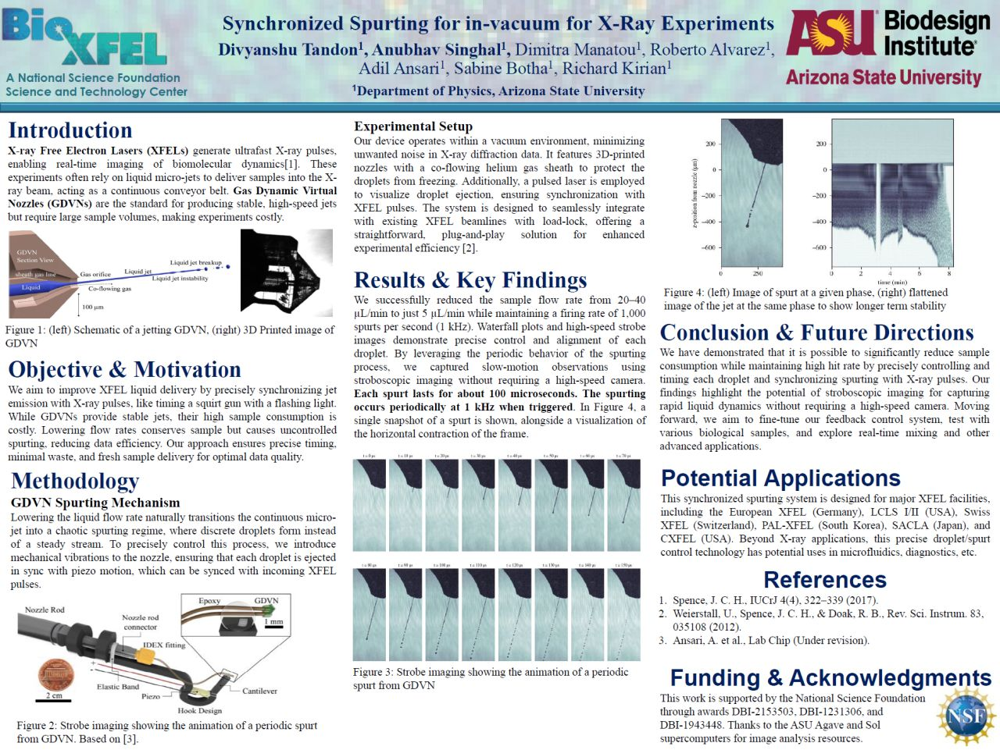
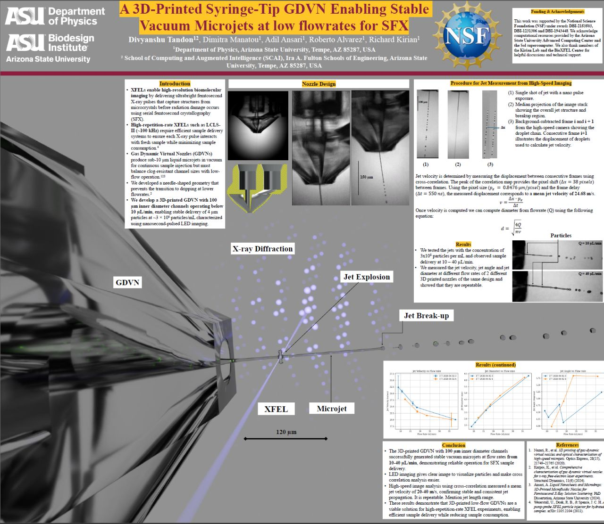
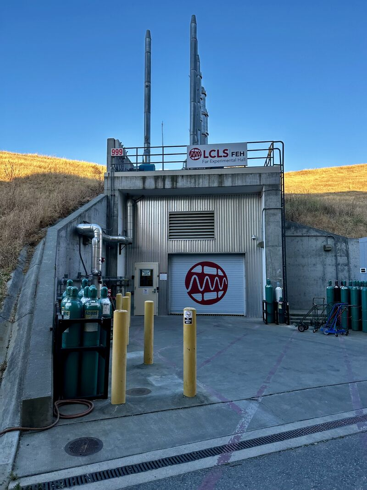
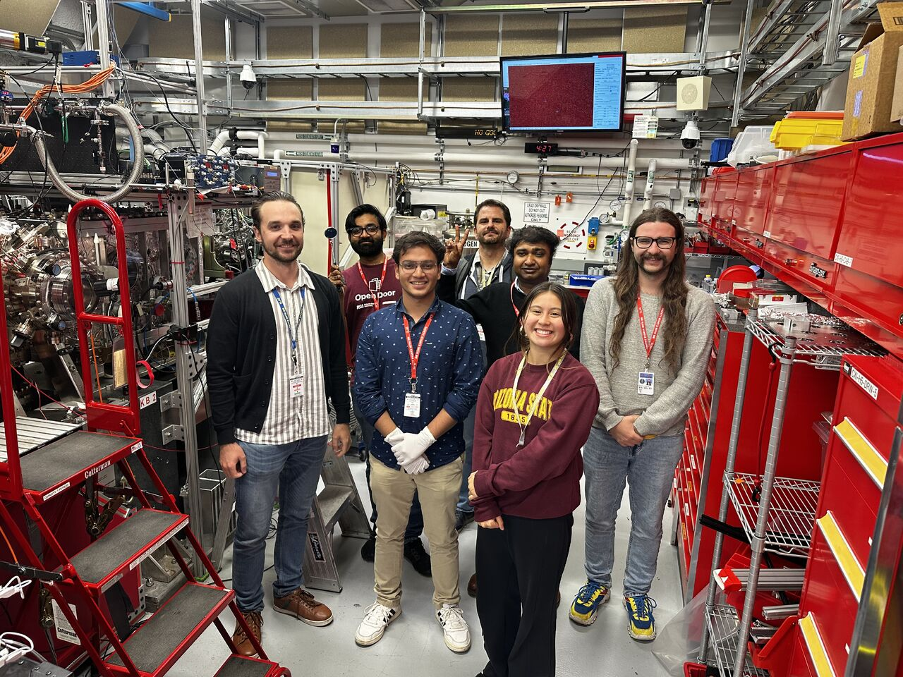
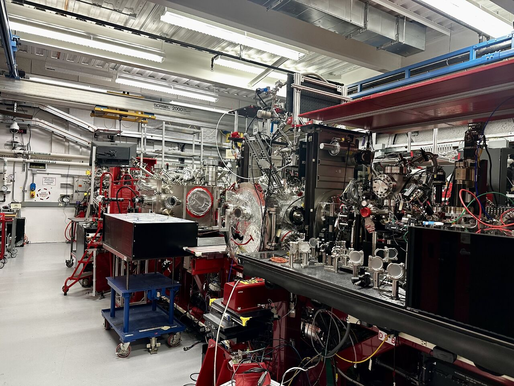

Scientific Computing
Python pipelines for imaging data, experiment metadata, and X-ray analysis workflows.
Most software engineers never have to think about whether a stream of liquid, thinner than a human hair, is stable enough to survive an X-ray beam. I do. I am Divyanshu Tandon, a Computer Science student at Arizona State University and an undergraduate researcher with CXFEL and ASU Biodesign, where my code lives close to the experiment: detector frames, h5 files, microjet videos, calibration details, and the strange failure modes that only show up when hardware and software meet.
My work centers on scientific software for X-ray free-electron laser imaging and biomolecular experiments. I build Python tools with NumPy, h5py, PyQt/PySide, and visualization workflows that help researchers inspect detector data, process high-speed imagery, and quantify microjet behavior, including velocity, diameter, breakup, and stability. At SLAC's LCLS beamline, I saw how small software decisions affect real data collection, not just a demo dataset.
Outside the lab, I build product-style software too: React interfaces, FastAPI services, backend APIs, and full-stack applications. I like problems where the interface has to stay usable, the computation has to be correct, and the system has to earn trust from people doing difficult work.

In XFEL sample-delivery work, I write software that measures liquid microjet velocity, diameter, angle, and breakup behavior from high-speed imaging data. My day-to-day stack includes NumPy, pandas, h5py, PyQt/PySide, and image-processing workflows tied to real experimental constraints.
I have supported beamline and lab work across ASU Biodesign, CXFEL, and LCLS at SLAC, from detector visualization and data collection support to documentation that helps a research team understand what the code is doing and why it matters.
Python pipelines for imaging data, experiment metadata, and X-ray analysis workflows.
Qt tools for detector views, interactive annotations, and research-facing data inspection.
React and FastAPI systems that make technical information searchable and usable.
Contributed to an open-source Python framework used for processing, visualizing, and analyzing X-ray diffraction detector data from XFEL experiments.
Built a healthcare policy platform with React and FastAPI for searching insurer policy documents, analyzing coverage rules, and retrieving relevant policy evidence.
Developed Python tools for liquid microjet characterization in XFEL sample-delivery experiments.
Built a graph-based routing engine for shortest-path computation using Dijkstra's algorithm, adjacency lists, and min-heap optimization.
Process liquid microjet imaging datasets, support instrumentation setup and calibration, and help coordinate data collection across active structural biology experiments.
Build Python tools with NumPy and PyQt for biomolecular imaging, data analysis, automation, and X-ray diffractive imaging workflows.
Operated and optimized ultra-thin sheet-jet injectors for in-solution single-particle imaging and assisted with detector configuration and data acquisition.
Collected and validated MaRTy temperature data for shade analysis, transforming field data into insights for sustainable urban heat resilience.
Ansari, A. et al. including Divyanshu Tandon. Lab on a Chip, Advance Article, 2025. DOI: 10.1039/D5LC00063G.
Read DOI




Python, Java, C, C++, JavaScript, TypeScript, SQL, HTML, CSS
React, FastAPI, REST APIs, PyQt, PySide, JUnit, Auth0
NumPy, pandas, h5py, image processing, detector visualization, cross-correlation analysis
Linux, Bash, Git, GitHub, GitLab, MySQL, CLI workflows
Open to software engineering internships, research software roles, and collaborations around scientific computing, data workflows, and full-stack tools.